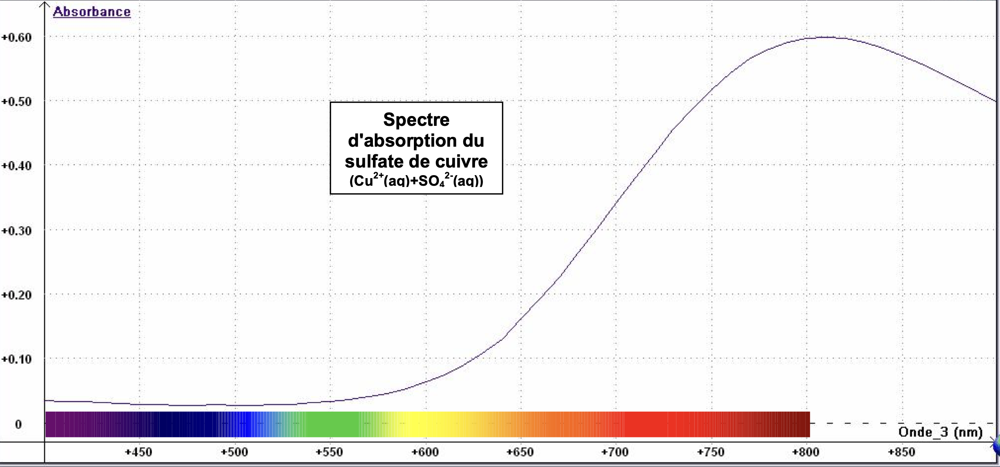
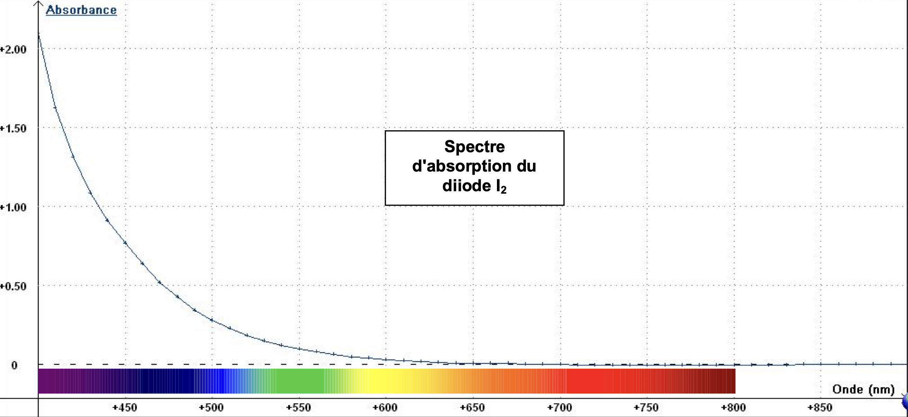

👨🏻🔬 L’objectif de la séance est de modifier la couleur d’une solution aqueuse verte en y ajoutant une solution incolore !!!
Documents
Coloration de quelques solutions en fonction des entités qui y sont présentes
| Solvant | Soluté | Couleur |
|---|---|---|
| Eau | Ion manganate $\ce{MnO_4^{3-}}$ | Bleu |
| Eau | Ion cuivre $\ce{Cu^{2+}}$ | Bleu |
| Eau | Ion permanganate $\ce{MnO_4^{-}}$ | Fushia |
| Eau | Ion cobalt $\ce{Co^{2+}}$ | Rose |
| Cyclohexane | Diiode $\ce{I2}$ | Rose |
| Eau | Diiode $\ce{I2}$ | Jaune orangé |
| Eau | Ion fer III $\ce{Fe^{3+}}$ | Orange |
Quelques tests caractéristiques de reconnaissance des ions en solution aqueuse
| Ion | Réactif | Résultat de la réaction |
|---|---|---|
| Ion cuivre, $\ce{Cu^{2+}}$ | Soude | Formation d’un précipité bleu d’hydroxyde de cuivre, $\ce{Cu(OH)_2}$ |
| Ion fer II, $\ce{Fe^{2+}}$ | Soude | Formation d’un précipité vert d’hydroxyde de fer II, $\ce{Fe(OH)_2}$ |
| Ion fer III, $\ce{Fe^{3+}}$ | Soude | Formation d’un précipité orange d’hydroxyde de fer III, $\ce{Fe(OH)_3}$ |
| Ion zinc, $\ce{Zn^{2+}}$ | Soude | Formation d’un précipité blanc d’hydroxyde de zinc, $\ce{Zn(OH)_2}$ |
| Ion chlorure, $\ce{Cl^{-}}$ | Nitrate d’argent | Formation d’un précipité blanc de chlorure d’argent, $\ce{AgCl}$, qui noircit à la lumière |
| Ion sulfate, $\ce{SO_4^{2-}}$ | Chlorure de baryum | Formation d’un précipité blanc de sulfate de baryum, $\ce{BaSO4}$ |
Remarques :
- Solution de soude : $\ce{Na^+ (aq) + OH^- (aq)}$
- Solution de nitrate d’argent : $\ce{Ag^+ (aq) + NO3^- (aq)}$
- Solution de chlorure de baryum : $\ce{Ba^{2+} (aq) + 2 Cl^- (aq)}$
- En présence d’ions baryum $\ce{Ba^{2+}}$ le diiode en solution aqueuse forme un solide blanc d’iodure de baryum $\ce{BaI2}$.
Solutions mises à disposition
- Solution verte inconnue
- Éthanol $\ce{C2H6O}$, incolore
- Cyclohexane $\ce{C6H12}$, incolore
- Eau distillée
- Solution de soude $(\ce{Na^+ (aq) + OH^- (aq)})$, incolore
- Solution de chlorure de baryum, incolore
Tour de magie
- Introduire, dans cinq tubes à essais, 2 mL de la solution verte.
- Ajouter 3 mL d’une des cinq solutions incolores, goutte à goutte, tout en observant.
Remarque : choisir bien évidemment une solution incolore différente pour chaque tube à essais. - Bien agiter les tubes à essais à l’exception de ceux contenant la solution de soude ou celle de chlorure de baryum.
Travail à réaliser
- À l’aide des documents fournis, essayer de déterminer la composition de la solution verte.
- Réaliser le tour de magie.
Noter toutes les observations. - Justifier les résultats obtenus.
Corrigé
Observations
- Solution aqueuse verte + eau ↓
- Aucune modification visible, si ce n’est une coloration moins prononcée
- Solution aqueuse verte + éthanol ↓
- Aucune modification dans un premier temps
- Après décantation :
- cristaux bleu au fond du tube
- La solution se colore en jaune en haut du tube
- Solution aqueuse verte + chlorure de baryum ↓
- Un précipité blanc s’est formé
- Solution aqueuse verte + cyclohexane ↓
- Apparition de deux phases
- Le mélange est hétérogène
- Phase supérieure→Se colore en rose/fuchsia
- Phase inférieure→Se colore en bleu
- Apparition de deux phases
- Solution aqueuse verte + soude (hydroxyde de sodium) ↓
- Formation d’un précipité bleu
Interprétations
- Normal car le solvant est l’eau
- Formation du précipité blanc : présence soit de diiode, soit d’ions sulfate dans la solution verte
- Mélange hétérogène : l’eau et le cyclohexane ne sont pas miscibles
- Liquides non miscibles↔Leur mélange est hétérogène
- Le cyclohexane est moins dense que l’eau, il constitue la phase supérieure
- Comment le déterminer expérimentalement : ajouter de l’eau et regarder quelle phase voit son volume augmenter
- Couleur de la phase supérieure : présence de diiode
- Couleur de la phase inférieure : présence d’ions cuivre ou d’ions manganate
- Formation du précipité bleu : présence d’ions cuivre dans la solution verte.
Conclusion(s)
- La solution verte est formée d’ions cuivre et de diiode
- Justification à partir des spectres d’absorption
- 
- 
- Le diiode est plus soluble dans le cyclohexane que dans l’eau
- Les ions cuivre sont plus solubles dans l’eau que dans le cyclohexane
Extraction par solvant
Extraction liquide-liquide
- Objectif : Séparer deux entités solubilisées dans un mélange homogène
- Comment ? ↓
- On choisit un solvant extracteur ↓
- Non miscible avec l’eau
- Dans lequel l’entité à extraire est très soluble
- On utilise une ampoule à décanter
- On choisit un solvant extracteur ↓